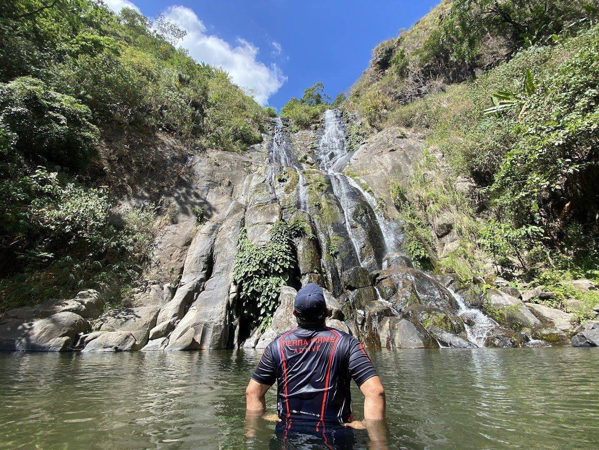
Miyamit Falls
Trek across lahar-carved trails to the world-famous crater lake, cradled by emerald cliffs.
View More
From volcanic craters to hidden hot springs, Porac's landscape offers an adventure for every kind of traveler.

Trek across lahar-carved trails to the world-famous crater lake, cradled by emerald cliffs.
View More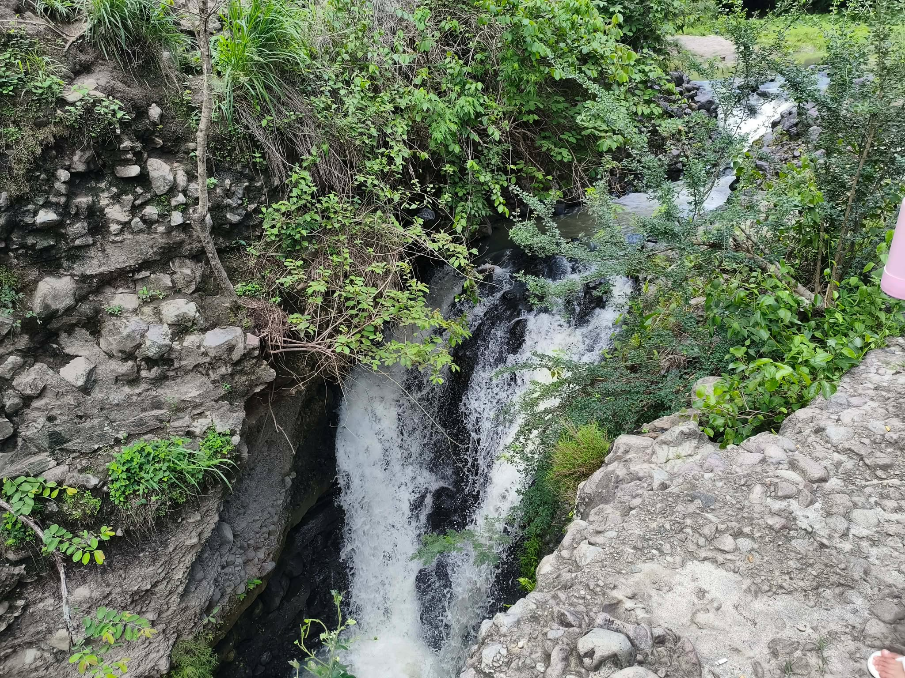
A scenic hidden gem that serves as a popular refreshing escape during the summer months.
View More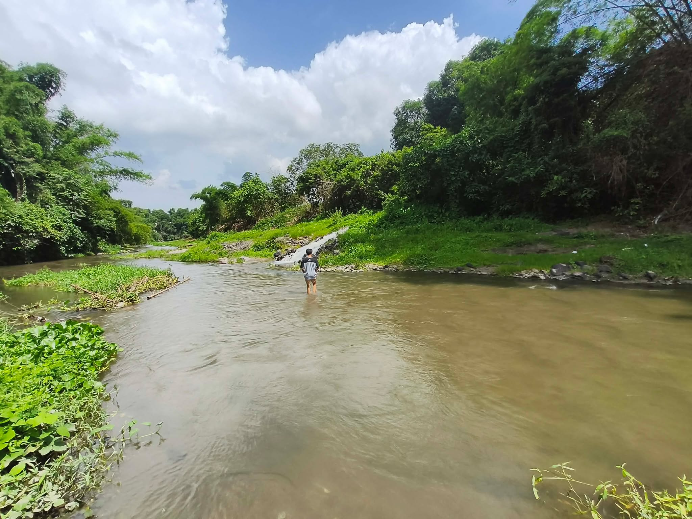
A scenic hidden gem that serves as a popular refreshing escape during the summer months.
View More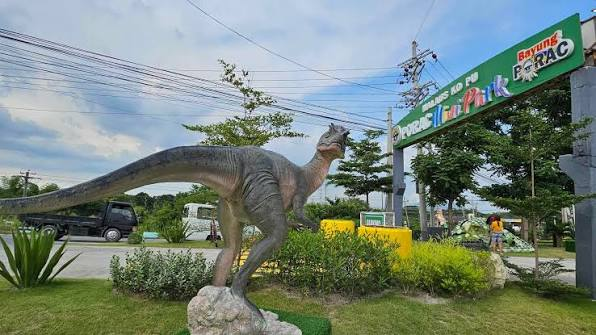
A newly renovated, vibrant recreational park featuring a dinosaur amusement area, rubberized running paths, a mini-amphitheater, and lively local food stalls.
View MoreAn ultimate outdoor playground offering a wide range of thrilling activities, high ropes courses, and ATV rides for families.
View More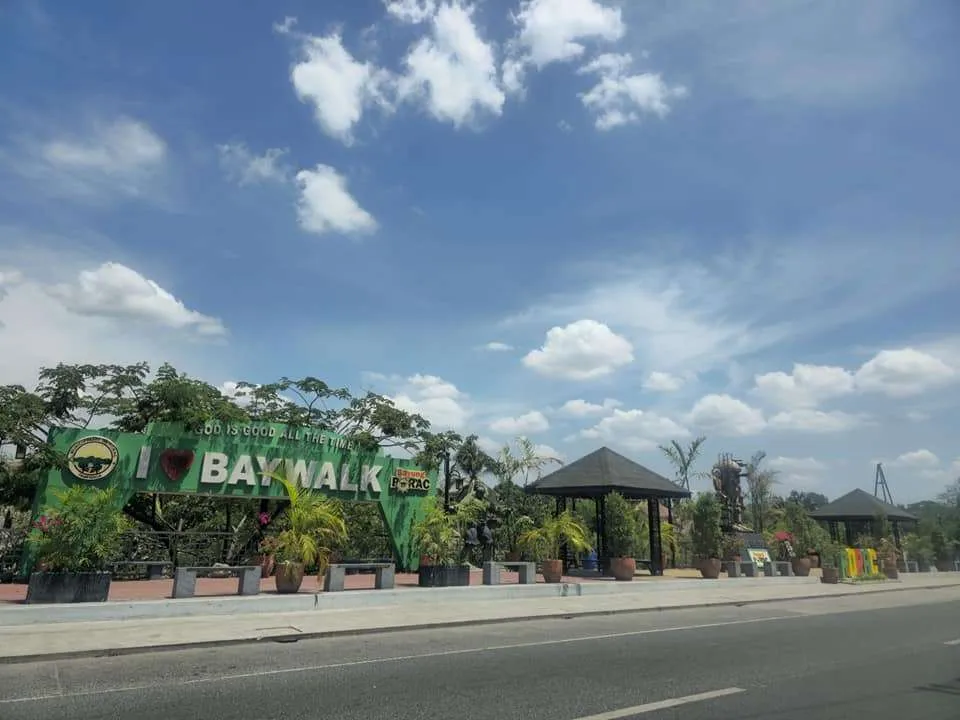
A vibrant community hub and leisure destination featuring local food spots, open spaces, and lively night markets.
View More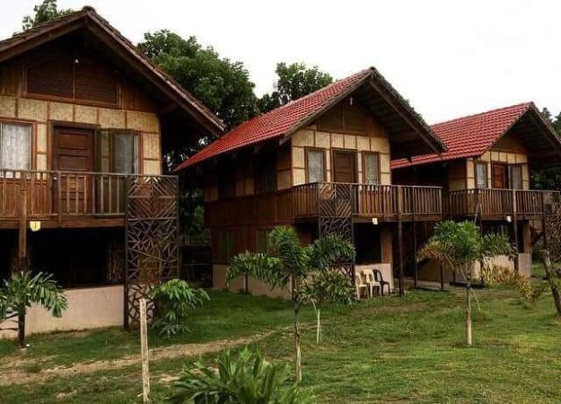
A natural and relaxing escape featuring spacious lodges, refreshing pools, and open gazebos perfect for recreation.
View More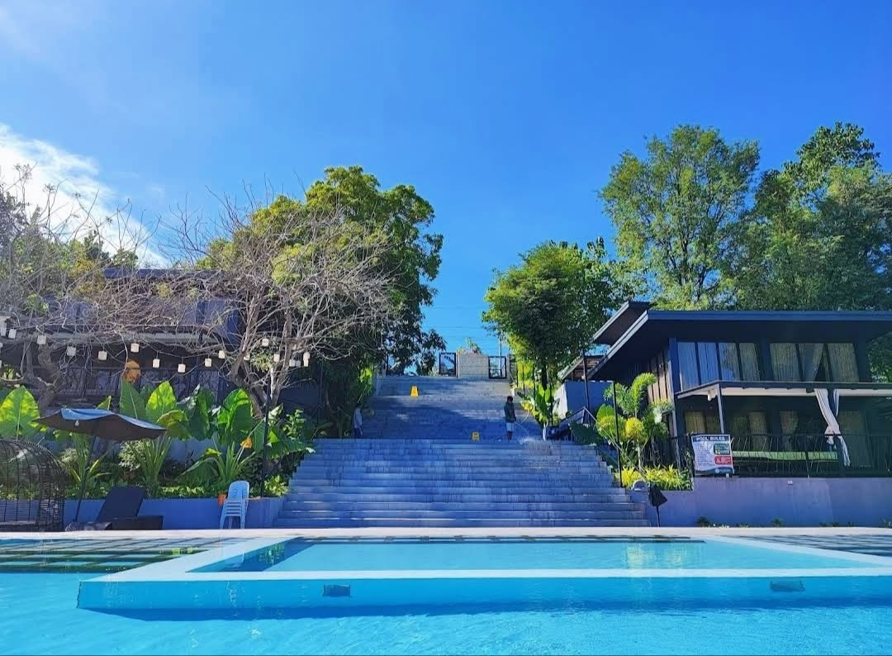
A rising private villa destination in Porac featuring scenic views, relaxing pool amenities, and lush landscapes perfect for family outings.
View More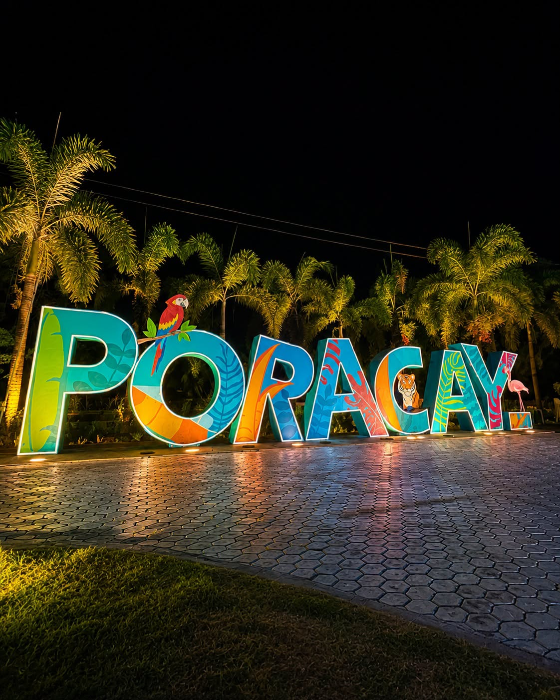
A vibrant vacationer's haven offering multi-sized swimming pools, native nipa huts, and an active outdoor playground perfect for big group outings and family gatherings.
View More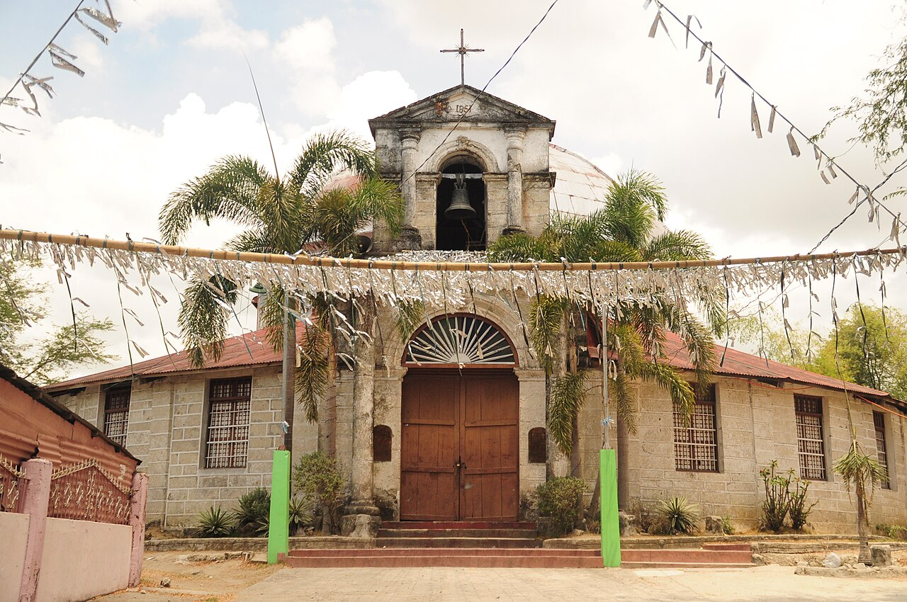
A majestic community chapel dedicated to Saint Vincent Ferrer, standing as a testament to Porac's enduring spiritual heritage and architectural resilience.
View More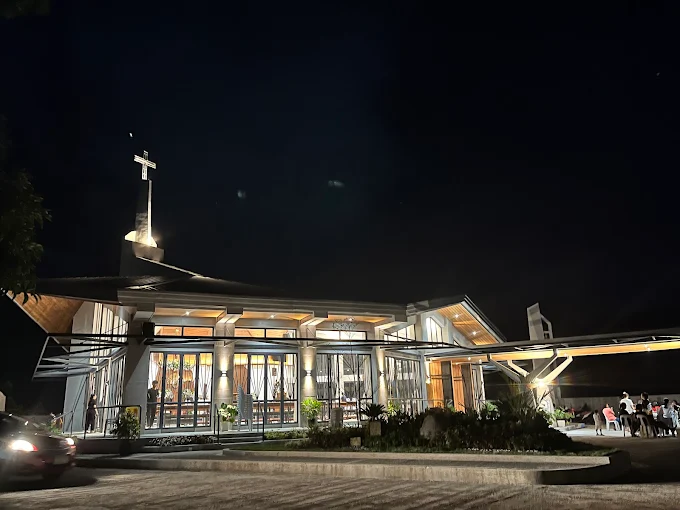
A peaceful neighborhood chapel in Pulong Santol that serves as the heart of local religious celebrations and seasonal barangay fiestas.
View More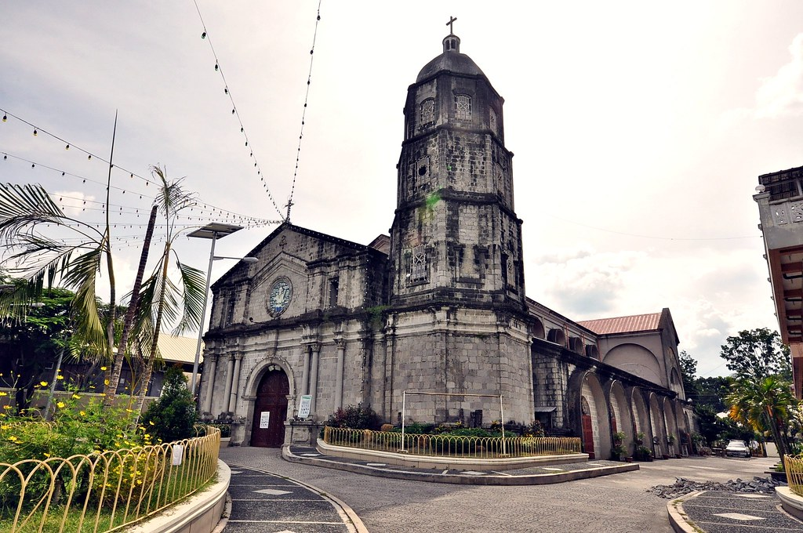
A historic 19th-century Baroque landmark in Poblacion, standing as a proud symbol of Porac's enduring spiritual heritage and architectural resilience through the centuries.
View More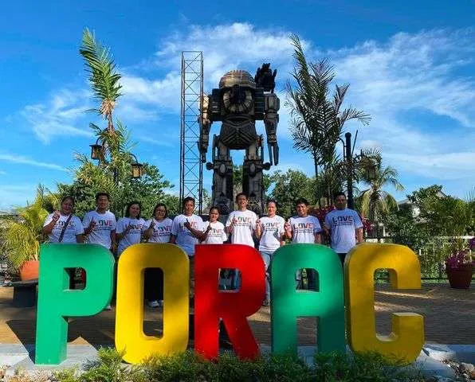
Nestled at the foot of Mount Pinatubo, Porac is a municipality in Pampanga where volcanic history has carved some of the Philippines' most breathtaking landscapes. What was once a site of devastation has transformed into a thriving destination for nature lovers and adventurers alike.
From ash-covered canyons to cool mountain hot springs, Porac invites travelers to experience a rare blend of natural wonder, rich Kapampangan culture, and warm Aeta hospitality found nowhere else.
A destination where every trail, hot spring, and local story tells you why Porac deserves a place on your travel list.
Volcanic craters, lahar canyons, and lush forest trails create a landscape unlike anywhere else in Luzon.
Immerse yourself in Aeta traditions and Kapampangan heritage passed down through generations.
4x4 lahar rides, crater treks, and river trekking make Porac a playground for thrill-seekers.